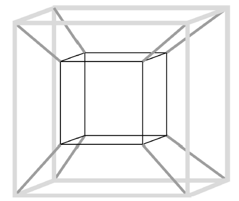
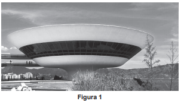
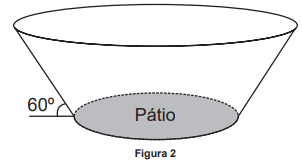

Benjamin Franklin: “Viver é enfrentar um problema atrás do outro. O modo como você o encara é que faz a diferença.”
11- Um agricultor utilizava toda a área de uma região plana, em formato retangular, com 50 m de largura e 240 m de comprimento, para o plantio de mudas. Seguindo recomendações técnicas, cada muda é plantada no centro de uma pequena região retangular de 10 cm de largura por 20 cm de comprimento.
Esse agricultor decidiu ampliar a área destinada ao plantio de mudas, utilizando agora um terreno, também plano, em formato retangular, com 100 m de comprimento por 200 m de largura. As mudas deverão ser plantadas respeitando-se as mesmas recomendações técnicas.
Com o aumento da área destinada ao plantio, a quantidade máxima de mudas que poderão ser plantadas a mais é
A) 100 000.
B) 400 000.
C) 600 000.
D) 1 000 000.
E) 1 600 000.
Sabemos que a largura inicial é de 50m e o respectivo comprimento é de 240m. Logo, a área inicial é dada por A1=50*240=> A1= 12.000m^2
Cada muda deverá ser plantada em um retângulo de 10cm de largura por 20cm de comprimento, o que nos dá uma área de Am=10*20=> Am= 200cm^2 --> convertendo para m^2 temos Am= 0,02m^2
A questão nos informa que houve um reajuste nas dimensões do terreno, que passou a ter uma largura de 100m por 200m de comprimento, com uma nova área de A2= 100*200=> A2= 20.000m^2
O enunciado cobra a quantidade de mudas a mais que serão plantadas no aumento dessa área, sem alterar as dimensões do plantio de cada muda. Podemos resolver por regra de três simples:
Calcula-se a diferença entre a área final e a área inicial para saber o tamanho acrescido no terreno:
A2-A1= 20.000-12.000
A2-A1= 8.000m^2
1 muda ---------- 0,02m^2
X mudas ---------- 8.000m^2
0,02X=8.000
X= 8.000/0,02 => X= 400.000 mudas
400.000 será o número de mudas plantadas A MAIS dentro do acréscimo da área do terreno.
GABARITO: LETRA B
12- Um ciclista faz um treino para uma prova, em um circuito oval, cujo percurso é de 800 m. Nesse treino, realiza 20 voltas. Ele divide seu treino em 3 etapas. Na primeira etapa, inicializa seu cronômetro e realiza as cinco primeiras voltas com velocidade média de 4 m/s. Na segunda etapa, faz mais cinco voltas, mas com velocidade média 25% maior que a da etapa anterior. Na última etapa, finaliza o treino mantendo a velocidade média da primeira etapa.
Ao final do treino, o cronômetro estará marcando, em segundo,
A) 2 600.
B) 2 800.
C) 3 000.
D) 3 800.
E) 4 000.
trajeto todo tem 800m
1° volta ele realizava em uma vel de 4m/s, assim, dividimos 800/4=200.5(numeros de voltas q ele dá)=1000s
2°n´s fazemos regra de 3. 4.25=100/100==1. entao teremos o valor de 5m/s. 800/5=160.5=800s
3°pegamos os 200 da primeira volta e multiplicamos por 10=2000s
resultado=1000+800+2000=3800s
GABARITO: LETRA D
13- O dono de uma loja pretende usar cartões imantados para a divulgação de sua loja. A empresa que fornecerá o serviço lhe informa que o custo de fabricação do cartão é de R$ 0,01 por centímetro quadrado e que disponibiliza modelos tendo como faces úteis para impressão:
um triângulo equilátero de lado 12 cm; um quadrado de lado 8 cm; um retângulo de lados 11 cm e 8 cm; um hexágono regular de lado 6 cm; um círculo de diâmetro 10 cm.
O dono da loja está disposto a pagar, no máximo, R$ 0,80 por cartão. Ele escolherá, dentro desse limite de preço, o modelo que tiver maior área de impressão.
Use 3 como aproximação para π e use 1,7 como aproximação para √3.
Nessas condições, o modelo que deverá ser escolhido tem como face útil para impressão um
A) triângulo.
B) quadrado.
C) retângulo.
D) hexágono.
E) círculo.
Um triângulo equilátero de lado 12 cm: 12².1,7/4
Área da 61,2 cm² (Isso dá R$6,12)
Um quadrado de lado 8 cm: A =64cm² (Isso dá R$0,64)
Um retângulo de lados 11 cm e 8 cm: A= 88cm² (R$ 0,88)
Um hexágono regular de lado 6 cm: l².6.raizde3/4 --》36.6.1.7/4 = 91,8 (R$ 9,18)
Um círculo de diâmetro 10 cm.: A=75cm² Correta! Maior área e dentro do valor requerido.
GABARITO: LETRA E
14- Muitos brinquedos que frequentemente são encontrados em praças e parques públicos apresentam formatos de figuras geométricas bidimensionais e tridimensionais. Uma empresa foi contratada para desenvolver uma nova forma de brinquedo. A proposta apresentada pela empresa foi de uma estrutura formada apenas por hastes metálicas, conectadas umas às outras, como apresentado na figura. As hastes de mesma tonalidade e espessura são congruentes.
Com base na proposta apresentada, quantas figuras geométricas planas de cada tipo são formadas pela união das hastes?
A) 12 trapézios isósceles e 12 quadrados.
B) 24 trapézios isósceles e 12 quadrados.
C) 12 paralelogramos e 12 quadrados.
D) 8 trapézios isósceles e 12 quadrados.
E) 12 trapézios escalenos e 12 retângulos.
A figura possui dois cubos, cada um, com 12 quadrados. Além disso, os vértices dos cubos estão ligados por um segmento de reta, formando trapézios isósceles. Assim, são 12 trapézios isósceles.
GABARITO: LETRA A
15- Projetado pelo arquiteto Oscar Niemeyer, o Museu de Arte Contemporânea (MAC) tornou-se um dos cartões-postais da cidade de Niterói (Figura 1).
Considere que a forma da cúpula do MAC seja a de um tronco de cone circular reto (Figura 2), cujo diâmetro da base maior mede 50 m e 12 m é a distância entre as duas bases. A administração do museu deseja fazer uma reforma revitalizando o piso de seu pátio e, para isso, precisa estimar a sua área. (Utilize 1,7 como valor aproximado para √3 e 3 para π).
A medida da área do pátio do museu a ser revitalizada, em metro quadrado, está no intervalo
A) [100, 200]
B) [300, 400]
C) [600, 700]
D) [900, 1 000]
E) [1 000, 1 100]
Para resolver a questão primeiro transformei a figura em um trapézio comum, depois dividi em um retângulo com dois triângulos, a base do retângulo era exatamente igual ao diâmetro do pátio, portanto era necessário apenas descobrir a medida das bases dos triângulo e subtrair elas dos 50 metros do diâmetro maior;
O triângulos tinham 12 metros de altura, um ângulo reto(90º) e um ângulo de 60º;
Com isso usei o calculo da tangente, Cateto Oposto dividido pelo Adjacente e como a tangente de 60º é igual à √(3), o cálculo ficou da seguinte maneira:
√3 = 12 / x
1,7 = 12 / x
x = 12 / 1,7 = 7,059 ≅ 7
Como foi dito antes, havia 2 triângulo, portanto a soma de suas bases é aproximadamente 14 metros, ou seja o diâmetro menor (50m - 2x) é igual 36;
Com essa informação, falta apenas calcular a área do piso:
A = π * d/2(raio)²
A = 3 * 18²
A = 3 * 324
Resultado final: A = 972m²
GABARITO: LETRA D